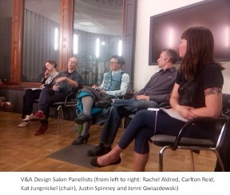
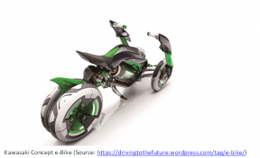

I was recently invited to speak at one of the V&A/ University of Brighton ‘Design Salons’ (summary of the event here). If you haven’t heard of them before they are well worth checking out and you can find some more information and summaries of previous events here. In attendance on the night were Kat Jungnickel (organiser), Rachel Aldred, Carlton Reid, Jenni Gwiazdowski, myself and an informed audience of 50. As speakers we were asked to give a response to the title ‘How is the urban cyclist designed?’ I found it a really useful event that got me thinking in a number of directions so I thought I’d beat my ‘provocation’ and subsequent thoughts into some kind of publishable form in case it resonated with anyone else out there.
How are age and life-stage being included in current bike designs?
My starting point is that there is no one essential or inevitable set of meanings or practices that we ascribe to what cycling is or could be: the cyclist is assembled; an ongoing production of multiple agencies, regulations, institutions, innovations and norms. So how is ‘the cyclist’ assembled in particular forms? Why do we ride in certain ways in certain places, using certain types of bicycle, for particular goals? Why these and not others? If there are so many other possibilities then why do only a few become reality? How could we imagine cycling differently?
Increasingly there is also the sense that we want to normalise cycling; that we want parents with children on bikes and we want children, teenagers and older people on bikes? Where are the bikes for this? Where are the spaces that can safely accommodate them? Sure these groups are being included in the rhetoric of 21st century urban cycling policy, but practically, visibly, where are they?
Why aren’t these groups being included in our current vision of cycling?
I want to offer a few thoughts on why they’re not visible. My first is to ask why does professional racing still drive the majority of bicycle design? After all, most of us don’t race. I was talking a short while ago with the marketing director of a major French bike manufacturer and we were discussing their approach to development and testing. What was striking for a firm this large was the fact that they only did product testing with professional racers. Now if we think about the product qualities that will arise and trickle down from such testing it is weight and performance, not more mundane qualities like ease and cost of maintenance, longevity, safety, load capacity, storage, security. Not to mention the fact that for many, three wheels and/or electric assist might be better for some groups or purposes in terms of stability, comfort and load carrying capacity (for more on e-bikes head over to here to see what Frauke Behrendt and her team have been up to).
I recently read an interesting paper on the evolution of bike design that illustrates my concern. The paper featured four case studies on bike development. Of these four, one was concerned with increasing ‘efficiency’, the other three with portability. So here we have understandings of cycling driven by notions of performance (power output) and commuting (portability). And indeed the whole chapter was underpinned by a narrow understanding of cycling as efficient and environmentally friendly. All good, but what about those of us who inhabit a slightly messier reality that requires affordances beyond those of professional bike racing? Where is the bike design for other purposes not circumscribed by male dominated worlds of commuting and sport? Indeed the ethos of current design is summed up well by Roy and Tovey when they suggest that:
“The process of designing a bike is one of synthesising innovative engineering with ergonomics in an aesthetically attractive package” (Roy and Tovey, 2012:197).
Really? If this is true no wonder we’re in such a mess! What happened to user-centred design? Now bike manufacturers have a long history of involvement with professional racing and rightly so, but isn’t it time that the product qualities desired by racers stopped dominating bike design for everyday mobility?
Gendering and ageing in bicycle design
Another key issue related to the previous one is the gendering and ageing in design generally – this was the focus of design salon 9 and is a real issue in bike design – who is the imagined user in R&D departments of bike manufacturers?
Part of the answer comes from the previous one – professional racing is neutered in the sense that not only are most athletes male, female athletes are seen to be the same as men in the sense that all they want is the fastest time, the lightest weight etc. A rare piece of equality? Similarly, older people can’t possibly be athletes, and if they dare to be, then all they want is the same right? Thus the point I want to make here is that it is the normativity of modern sport that crushes difference and design for the everyday.
The second part of the answer is related to who populates the design departments of bike manufacturers. Again, I’d wager its largely young men, and most likely young men with an interest in cycling as sport. Yet another part of life dominated by as the New Statesman put it ‘The Great White Male’.
So where is the co-design, the co-production? Shouldn’t we be doing ethnographies of family life and finding out exactly why family life and cars are so much more appealing to the vast majority? In doing so we could begin to apply these insights to bike design in order to shift what we understand as a bike and create a more inclusive vision (and reality) for cycling?
In my view there is an issue here of the kinds of cultures we embed design and designed object within. I would argue that despite its connections with sport, the car has long been embedded in everyday family cultures and thus the Citroen C3 Picasso has little in common with a Formula 1 car. There is the sense that cycling needs to be dis-embedded from its current cultures and into others which reflect the everyday practices of a broader range of people – not just commuters and sports enthusiasts.
Thinking one step further, what about modularity in bike design? Even notoriously throwaway electronic cultures are starting to address this first with Phone Bloks and now Google’s Project ARA. What about modular bike design? Beyond the fact that we may be able to produce bikes that can be user ‘hacked’ and consequently become legible objects of user-maintenance and adaptation, there is a sense that family life in particular requires a vehicle that can adapt; perhaps easily transforming from two to three wheels, carrying cargo of shopping and little people, keeping the elements out more and assisting when the terrain gets hilly. Where are these on the design boards of bike manufacturers? Where is the imagination and innovation that they purport to have in abundance?
Designing spaces for what we have, rather than the future we want
My final point relates to the fact that we appear to lack imagination in terms of thinking about the future we want and the landscapes to support it. The new TfL designs for the London Cycling Super Highways may be a case in point.
Suspend disbelief for a moment and imagine that we end up in some kind of cycling utopia where bikes have more than two wheels, may often feature electric assist and have extra cargo capacity. A world for example where parents take their children to school in Christiania-style E-bikes perhaps? My question is how will these fare on the kinds of infrastructure proposed by TfL? How would an armada of e-trikes fare – and there are numerous reasons why we should see such a development if we are serious about cycling for all – with their larger turning circles and widths, slower and/or higher speeds? Would they be able to negotiate such infrastructure en-masses or would they be forced to operate at the margins, or in amongst the HGVs or be put off completely from making a comeback?
The imagined user for our current vision of cycling it seems is one who has no problem balancing on two wheels, has very little extra baggage – shopping, children or otherwise, and is healthy, time-rich and willing enough to puff up the hills. The imagined user seems to be, well, pretty much whoever is actually cycling at the moment. I’m not saying for one moment that the proposed London super highways are not a welcome development; they absolutely are. My concern is that such designs ultimately limit what can actually take to the roads and thus who can take to the roads.

{kind=link}
{kind=link}
{kind=link}
Leave a Reply